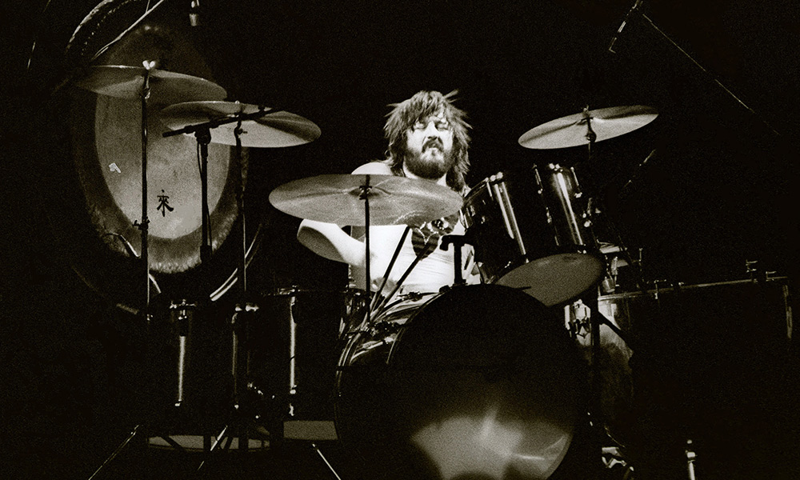
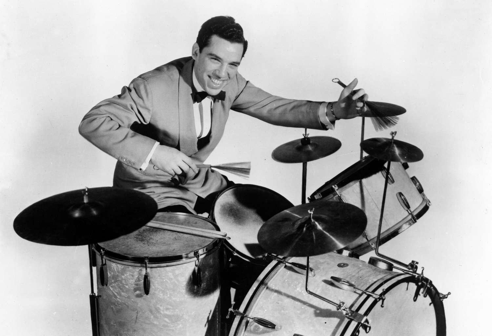
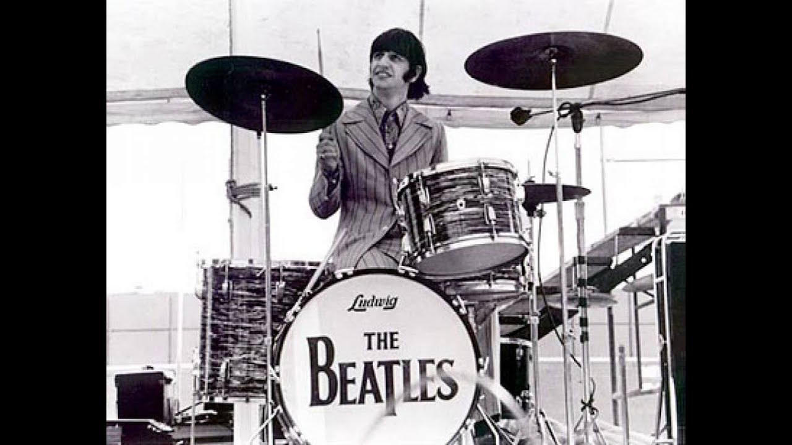

Icons
This page is about some very influential, famous drummers in history.
John Bonham
John Henry Bonham was an English musician, best known as the drummer for the rock band Led Zeppelin. Esteemed for his speed, power, fast single-footed kick drumming, distinctive sound, and feel for groove, he is regarded as one of the greatest and most influential drummers in music history.
Buddy Rich
Bernard "Buddy" Rich was an American jazz drummer, songwriter, conductor, and bandleader. He is considered one of the most influential drummers of all time. Rich was born and raised in Brooklyn, New York, United States. He discovered his affinity for jazz music at a young age and began drumming at the age of two.
Ringo Starr
Sir Richard Starkey MBE, known professionally as Ringo Starr, is an English musician, singer, songwriter and actor who achieved international fame as the drummer for the Beatles.